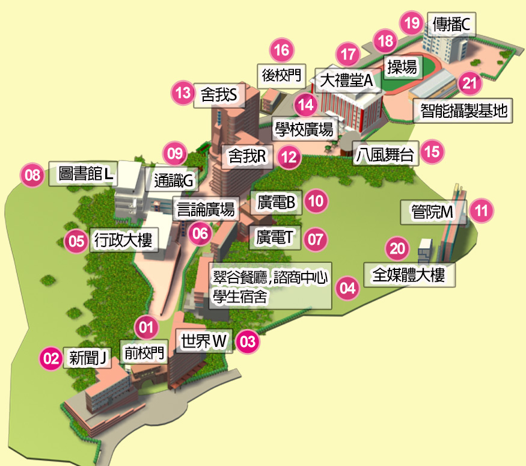

地址： 台北市木柵路1段17巷1號。
搭乘公車： 251、251區間、253、660、666、671、915、景美-榮總(快)、棕12、棕6 等公車皆可至「世新大學」站下車。
搭乘捷運： 松山新店線景美站1號出口，直走左轉木柵路，步行約5-10分鐘可到達。或者，搭乘捷運文湖線至萬芳醫院站，轉搭捷運接駁公車至「世新大學站」下車。
開車： 從北二高（新店交流道）下→中興路三段→右轉木柵路一段直行至試院路後左轉。
>
地址： 台北市木柵路1段111號。
搭乘公車： 251、251區間、253、647、660、666、671、915、景美-榮總(快)、棕12、棕22、棕6 等公車皆可至「復興派出所站」或「考試院站」下車。
搭乘捷運： 松山新店線景美站1號出口，直走左轉木柵路，步行約20-30分鐘可到達。或者，搭乘捷運文湖線至萬芳醫院站，轉搭捷運接駁公車至「復興派出所站」或「考試院站」下車。
